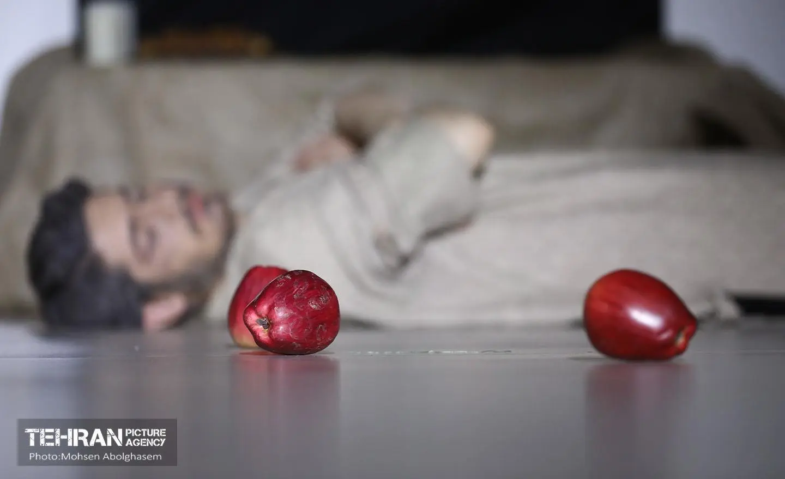
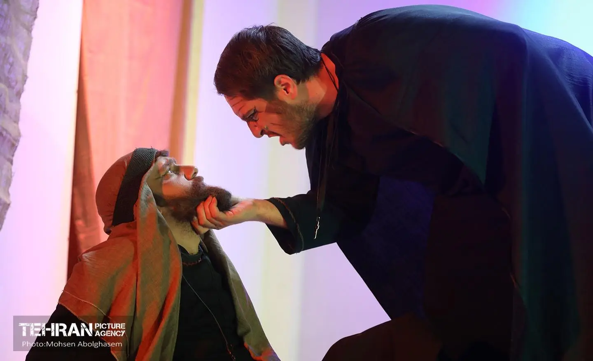
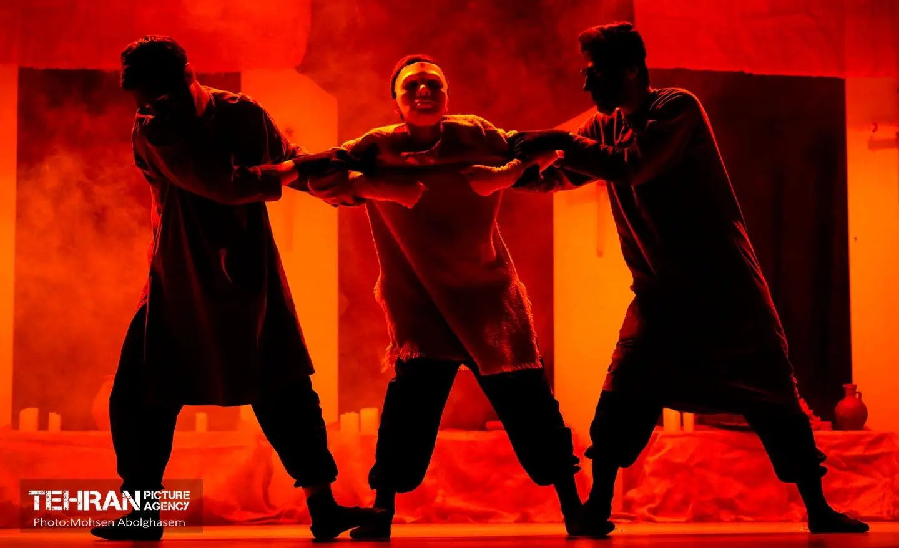
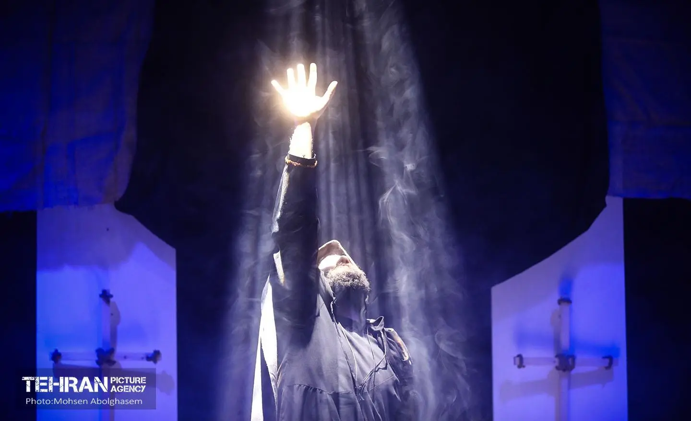
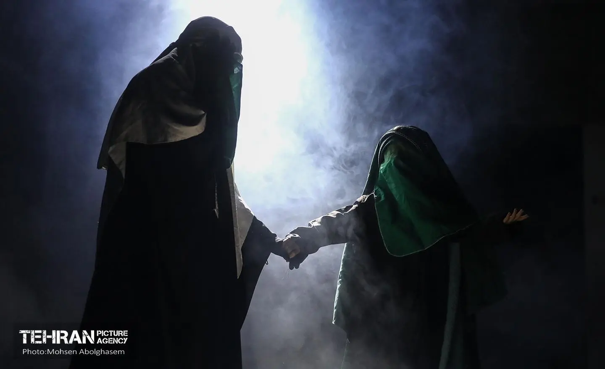
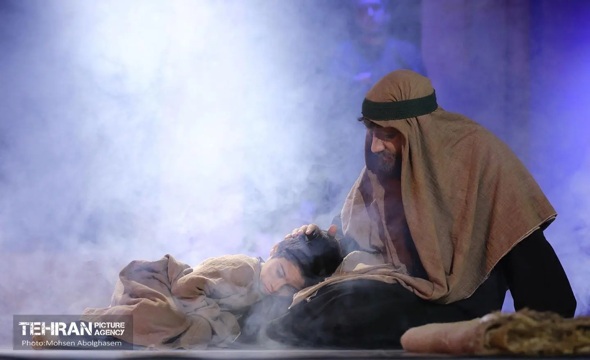
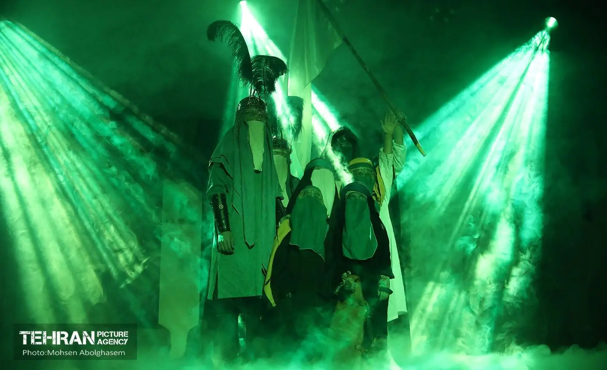
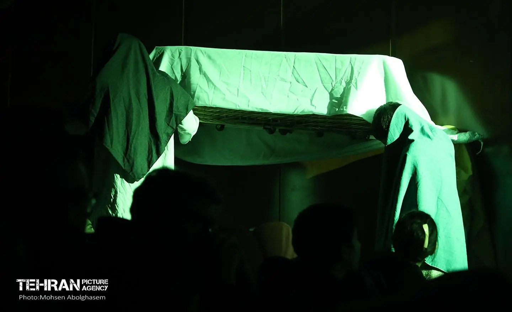
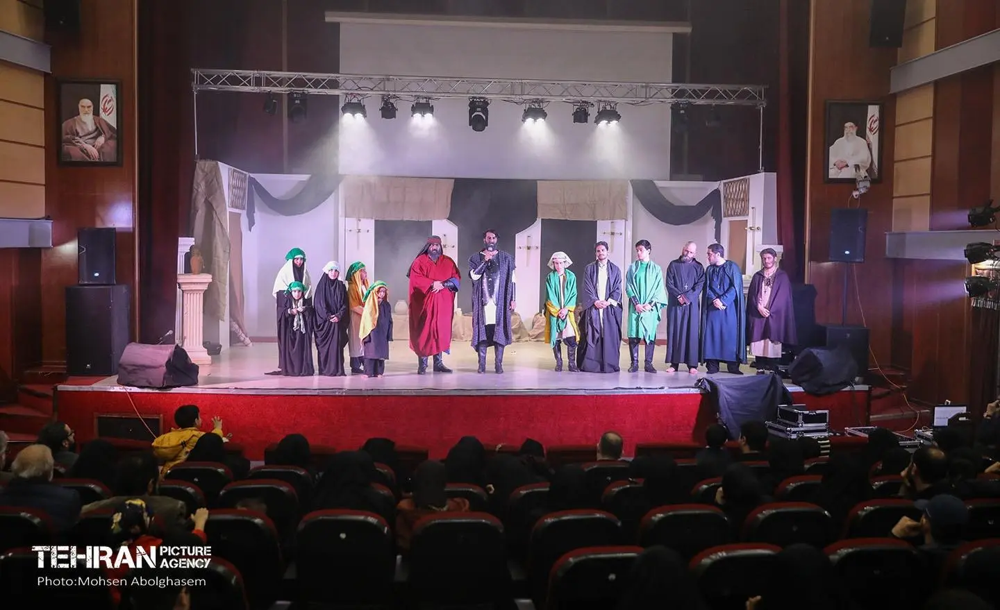

به زودی
گروه هنری نمایشی تراب
حریم
خلاصه نمایش
راهب مسیحی که به تازگی مسلمان شده برادرش برای اینکه از او اعتراف بگیرد و اورا از دیر ( کلیسا ) بیرون کند با او وارد بحث میشود ومتوجه میشود راهب شیفته ولایت حضرت علی شده وتوسط نوه اش رازی از حسین بن علی میداند و برادر باعث ....
تاریخ اجرا
8 آبان 1405
زمان شروع اجرا
متعاقبا اعلام میگردد
مدت اجرا
110 دقیقه
رده سنی
+8 سال
محل اجرا
متعاقبا اعلام میگردد
نکات قابل توجه
* برای آسودگی خاطر شما ، فضای نگهداری از کودکان در مدت اجرای نمایش فراهم است.
* حضور شما 20دقیقه قبل از شروع اجرا در سالن الزامی است.
* احتراما از به همراه داشتن هرگونه خوراکی به غیراز آب به داخل سالن جلوگیری میشود.
* حضور شما 20دقیقه قبل از شروع اجرا در سالن الزامی است.
* احتراما از به همراه داشتن هرگونه خوراکی به غیراز آب به داخل سالن جلوگیری میشود.
گالری تصاویر
لحظاتی از دنیای نمایش









بازیگران
هنرمندان حاضر در این اجرا
امیرحسین قائمی
بازیگر
علی طاوسیان
بازیگر
محمدحسن خوش نظری
بازیگر
محسن مکرمی
بازیگر
امیرحسین فارسی
بازیگردیگر عوامل و بازیگران
- محمدحسن موسی خانی
- رسول خطیب
- مهدی حمیدی
- معین نقیبی راد
- پرهام تورانی
- النا توکلی
- مهدیس میقانی
- ستایش محمدی
- لیست دیگر بازیگران
روایتی برای دیدن و به خاطر سپردن
برای اطلاع از جزئیات و رزرو بلیت، از طریق فرم زیر اقدام کنید.
رزرو بلیت